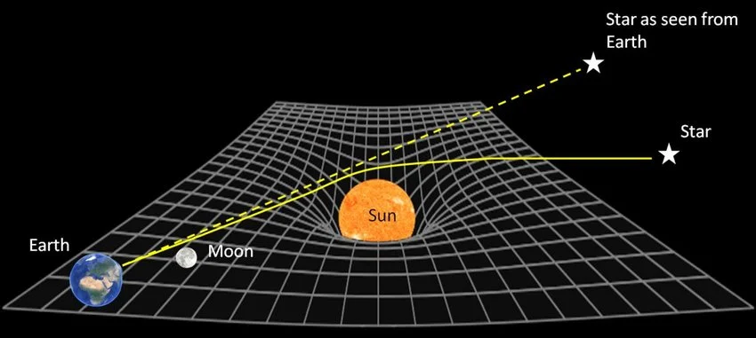

Rad Relativity Relativity
EINSTEIN
BROKE PHYSICS
AND BROKE IT A FEW
MORE TIMES
AND THEN HE EXPLAINED IT
A compleatly reliable and accurate discription of Eienstiens Theory oF Relativity.
SPACE, TIME, A LITTLE SALT
AND THE AUDACITY
OF ALBERT EINSTEIN
The Theory of Relativity is one of the most important ideas in modern physics, developed by Albert Einstein in the early 20th century. It explains how space, time, and gravity work — especially when objects move very fast or when gravity is extremely strong.
Einstein's theory explains that space and time are connected through spacetime, that time is relative depending on motion and gravity, and that mass and energy are related. Both special and general relativity have been tested many times. Relativity is not theoretical.
Disclaimer: All of this is simplified for easier reading and understanding, and is as accurate as possible in this form. — Me, the Author
SPECIAL
RELATIVITY
Covers space and time for objects at constant speeds. No gravity involved.
GENERAL
RELATIVITY
Extends special relativity to include gravity. Mass curves spacetime.
- Time dilation — moving clocks run slower
- Length contraction — fast-moving objects appear shorter
- Nothing can go faster than light
- $E = mc^2$ — mass and energy are one thing
SPECIAL
RELATIVITY
YOU'RE ALREADY
MOVING —
YOU JUST DON'T
KNOW IT
Special relativity (1905) describes how space and time work for objects moving at constant speeds — no gravity involved. It rests on two postulates:
- The laws of physics are the same for all inertial frames (non-accelerating).
- The speed of light in a vacuum is always $c \approx 3.0 \times 10^8$ m/s — no matter how fast the observer is moving.
THE SEALED TRAIN
Imagine you are on a sealed train — no windows, no gaps — travelling at a constant speed. You do not know you are moving. You roll a ball on the floor. It drops to the ground and rolls exactly as it would on solid ground.
From inside, you have no way of knowing how fast the train is moving. Physics behaves identically at any constant speed. The laws of physics are the same in all inertial frames.
This means two observers moving at different constant speeds will each measure the same speed of light — not different values, as classical physics would predict. Einstein's insight was that this forces space and time to be flexible instead.
OBJECTS LIE
ABOUT THEIR SIZE
Length contraction happens when something is moving — but it is only significant at speeds approaching the speed of light. Because space and time are interconnected and the speed of light is constant, the relativity of simultaneity means that light from one end of a moving object reaches an observer at a different time than light from the other end. If you measure the distance between the ends using those arrival times, you get a shorter value. This is the observed length contraction.
$$L = L_0\sqrt{1 - \frac{v^2}{c^2}} = \frac{L_0}{\gamma}$$MASS IS JUST
LAZY ENERGY
$$E = mc^2$$
Mass and energy are two forms of the same thing. A tiny bit of mass equals an enormous amount of energy. And because $c$ is the cosmic speed limit, nothing with mass can ever reach it.
CLOCKS ARE
LIARS TOO
THE BALL EXPERIMENT
Imagine a ruler and two observers: one standing still, the other moving to the right. A football is thrown to the left. Both measure its speed using their own ruler and clock. The stationary observer measures 50 m/s; the moving observer measures 150 m/s. In classical (Newtonian) physics, both are valid — motion is always relative, and each observer considers themselves "at rest."
Logically then, a stationary observer should measure light at $c$, and a moving observer at $c + 50$ m/s. But Einstein said this is wrong. The speed of light in a vacuum is always the same, regardless of the observer's motion.
THE LIGHT CLOCK
To explore the consequences, imagine a light clock — a beam of light bouncing between two mirrors. Seen from inside a moving train and from a stationary observer on the ground, the same clock behaves differently.
For the rider, the photon travels straight up and down. For the ground observer, because the clock moves sideways, the photon follows a longer diagonal path — while still moving at exactly the speed of light.
As a result, the ground observer concludes that less time has passed on the moving clock. A moving clock runs more slowly. This is time dilation.

THE WORLD'S MOST
INCONVENIENT WATCH
In the ground frame, the resting clock's light travels straight between mirrors at distance $d$. The time between ticks is the proper time, $\Delta t_0$, where $d = c(\Delta t_0/2)$. This distance is perpendicular to the motion, so $d$ is the same in every reference frame.
For the moving clock, the photon traces a diagonal path of length $S = c(\Delta t/2)$, while the clock moves sideways $L = v(\Delta t/2)$. The lengths $d$, $L$, and $S$ form a right triangle. Applying the Pythagorean theorem and solving:
$$\Delta t = \gamma\,\Delta t_0 \qquad \gamma = \frac{1}{\sqrt{1 - v^2/c^2}}$$The moving clock's tick interval $\Delta t$ is longer than the proper time $\Delta t_0$ — the moving clock runs slow. The Lorentz factor $\gamma$ is always $\geq 1$.
Proper time is the time measured by a clock present at both events in the same location — essentially the time in the frame where the clock is at rest. It is always the shortest possible elapsed time between those events.
THIS IS REAL AND
IT HAPPENS CONSTANTLY
THE IMMORTAL MUON
Muons are created when cosmic rays — high-energy particles from space, which you should have learned about from science — strike nuclei in the upper atmosphere. At rest, a muon's average lifetime is about 2.2 microseconds; far too short to travel the ~18 km to sea level before decaying.
Logically, muons should never reach the ground. Yet many are observed at sea level, confirmed by experiments on Mount Washington. Using the time dilation formula, their lifetime as seen from Earth can be about ten times longer than their proper lifetime — enough to travel several kilometres and reach the sensors.
THE VERY YOUNG SIBLING
The twin paradox: one twin stays on Earth while the other travels at high speed to a distant star and returns. From Earth's frame, the traveling twin's clock runs slow — the traveler returns younger.
From the traveler's view, Earth seems to move, so Earth's clocks appear slow too. Paradox?
The resolution: the traveling twin changes inertial frames at the turnaround — they experience acceleration. The Earth-bound twin does not. When the traveler switches frames, Earth's time coordinate "jumps" forward in the new frame. Over the whole journey, this frame-switching creates a larger total elapsed time for Earth. When they reunite, the traveling twin is much younger.
GENERAL
RELATIVITY
1915 — Extends special relativity to include gravity. Instead of thinking of gravity as a force pulling objects, mass and energy curve spacetime, and objects move along the curves.
GRAVITY ISN'T
A FORCE,
IT'S A VIBE
Imagine a single spherically symmetrical object — non-rotating and electrically neutral — alone in an empty universe. Release a ring of stationary particles around it (far away). The particles gradually speed up towards the object until they reach it.
Release more and more streams until you have a uniform flow all accelerating toward the object. Now, instead of particles, think of it as spacetime itself flowing like a river into the object, carrying anything in its path. That is how gravity actually works.
THE STRAIGHTEST POSSIBLE
CROOKED PATH
Free fall — like an orbiting planet or a dropped object — is actually the object moving along the "straightest possible path" (a geodesic) in curved spacetime. There is no force pulling it. The path itself is curved by nearby mass.
Every object is already moving through time. Spacetime warping converts that temporal motion into spatial motion — pulling things toward massive objects.
We cannot create a perfectly correct visual for general relativity for one key reason: it includes a fourth dimension. Instead of a spatial dimension, Einstein's theory includes time as the fourth dimension. We can make useful 3D approximations — but they are always approximations.
THE UNIVERSE
AS A BOUNCY CASTLE
The sheet visualisation: imagine a perfectly flat, infinitely stretchy sheet with a grid network. Place a large steel ball and a small ping pong ball on it. The steel ball creates a large curve; the ping pong ball rolls toward it, picking up speed.
Now roll the ping pong ball in from the side — it spirals briefly and hits the steel ball. The sheet is spacetime. The steel ball is a planet. The falling ping pong ball is an object under gravity; rolled from the side, it is an orbiting object.
If you shoot the ping pong ball from a massive distance with enormous speed, it whizzes past without orbiting. Control that energy and it enters a stable orbit that decays much more slowly. *You need a lot of speed, but maybe not THAT much.*

- Objects sit on top of spacetime in the visual. Not accurate — objects exist within it.
- The sheet is 2D. Spacetime is 4D (three spatial dimensions + time).
- It explains gravity using gravity — the sheet only curves because of a separate gravitational pull.
- It has no time component; the "spacetime" in the visual is really just "space."
A more accurate visualisation uses a full 3D grid or net representing spacetime, pulled and contracted toward the central object — better showing the "river" effect. The full 4D version (including time) cannot yet be perfectly visualised. The most popular 4D approximation is a cube inside a cube with connected vertices.
THE EQUATION
THAT DOES IT ALL
To look at gravitational time dilation, we look at the Schwarzschild Solution — the spacetime geometry around a single, spherical, non-rotating, uncharged mass. We do not need a big new equation; the time dilation factor is already inside it.
$$ds^2 = -\!\left(1 - \frac{2GM}{c^2 r}\right)c^2\,dt^2 + \left(1 - \frac{2GM}{c^2 r}\right)^{-1}dr^2 + r^2\,d\Omega^2$$The highlighted term $\left(1 - \frac{2GM}{c^2 r}\right)$ appears in the metric's time component. Take its square root to get the gravitational time dilation factor:
$$\text{Grav. TD Factor} = \sqrt{1 - \frac{2GM}{c^2 r}}$$Compare the two time dilation factors side by side:
$$\text{Velocity TD:} \quad \sqrt{1 - \frac{v^2}{c^2}}$$ $$\text{Gravity TD:} \quad \sqrt{1 - \frac{2GM}{c^2 r}}$$Both share the form $\sqrt{1 - (\,\cdot\,)/c^2}$. Equating the inner terms gives:
$$\frac{2GM}{r} = v^2$$This shows that gravitational time dilation and velocity-based time dilation are the same phenomenon, and gives an equation to substitute between them.
THERE IS NO
TRUE TIME
Because the speed of light is always constant, time moves more slowly for you to compensate — so the speed of light remains constant from your perspective too. This is why time dilation exists.
Because of this, there is no single "true" time — it is all relative. Some claim the "true" time is measured in a space without any influence from gravity or velocity. This obviously cannot happen in our ever-expanding universe, because everything is under some form of gravitational influence.
Time is relative. Clocks lie. Gravity bends everything — including the passage of time itself. — Summary